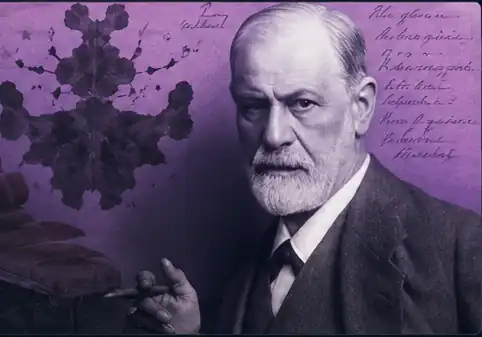

Freud · L’inconscio e la crisi del soggetto
L’io non è padrone
in casa propria.
L’inconscio e la crisi dell’io padrone di sé.
?
Domanda generatrice
Se una parte decisiva della nostra vita psichica agisce senza diventare cosciente, che cosa resta della libertà, della responsabilità e della conoscenza di noi stessi?